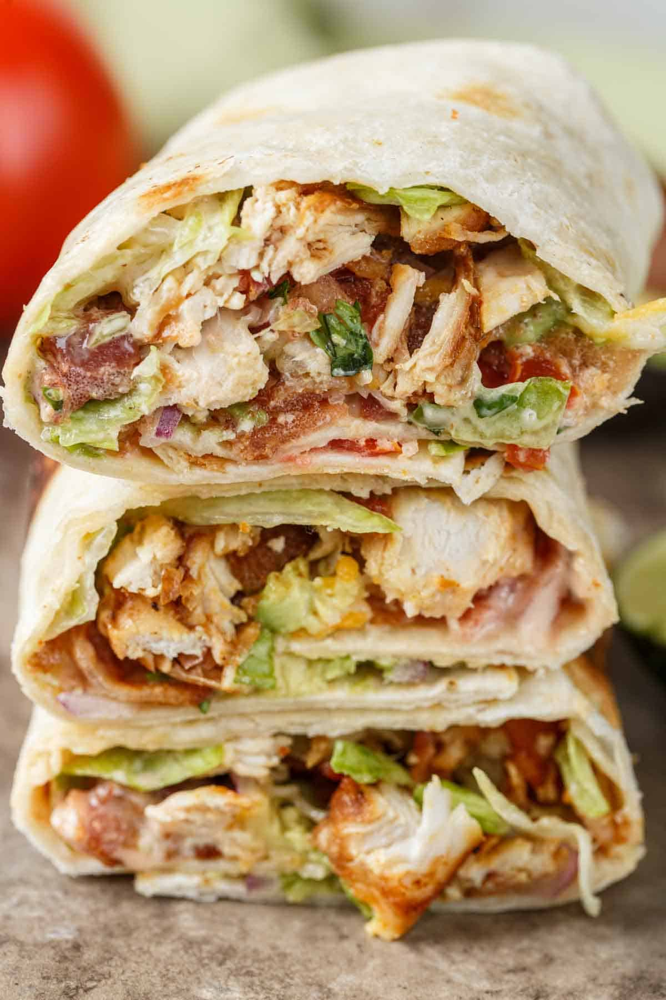
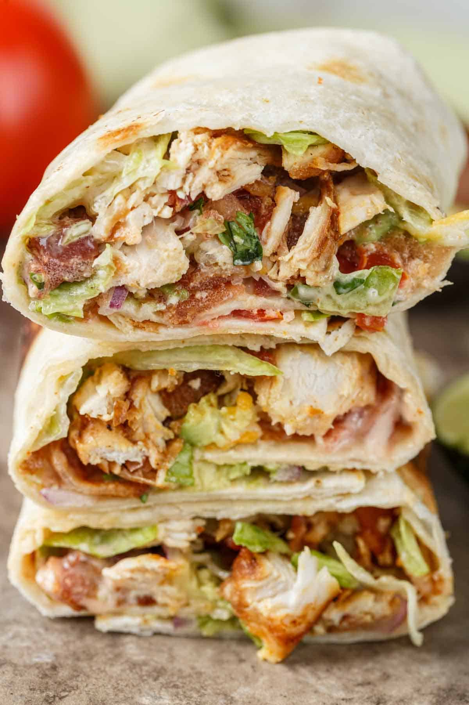

Lunch is a meal eaten around the middle of the day. It is commonly the second meal of the day, after breakfast, and varies in size by culture and region.
According to the Oxford English Dictionary (OED), the etymology of lunch is uncertain. It may have evolved from lump in a similar way to hunch, a derivative of hump, and bunch, a derivative of bump. Alternatively, it may have evolved from the Spanish lonja, meaning 'slice of ham'. It was first recorded in 1591 with the meaning 'thick piece, hunk' as in "lunch of bacon". The modern definition was first recorded in 1829. The word luncheon has a similarly uncertain origin according to the OED, being "related in some way" to lunch. It is possible that luncheon is an extension of lunch, as with punch to puncheon and trunch to truncheon. Originally interchangeable with lunch, it is now used in especially formal circumstances. The Oxford Companion to Food claims that luncheon is a Northern England English word that is derived from the Old English word nuncheon or nunchin meaning 'noon drink'. The OED records the words "nuncheon" and "nunchion" with the meaning "drink" or "snack" in various forms since the Middle English period.
 
